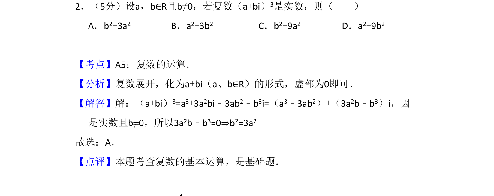
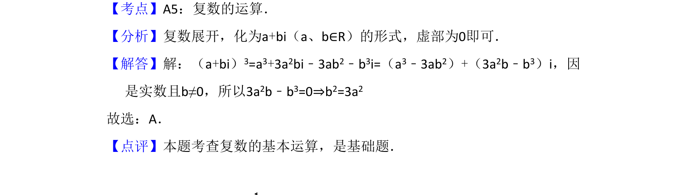

考点：复数运算 复数为实数的条件

本题考查复数乘方展开及复数为实数的条件。

📄 原 PDF 第 1 页：
素材/真题/吉林/2008-2024·（吉林）数学高考真题/2008年高考数学试卷（理）（全国卷Ⅱ）（解析卷）.pdf
2．（5分）设a，b∈R且b≠0，若复数（a+bi）3是实数，则（ ） A．b2=3a2 B．a2=3b2 C．b2=9a2 D．a2=9b2
【考点】A5：复数的运算．菁优网版权所有 【分析】复数展开，化为a+bi（a、b∈R）的形式，虚部为0即可． 【解答】解：（a+bi）3=a3+3a2bi﹣3ab2﹣b3i=（a3﹣3ab2）+（3a2b﹣b3）i，因 是实数且b≠0，所以3a2b﹣b3=0⇒b2=3a2 故选：A． 【点评】本题考查复数的基本运算，是基础题．